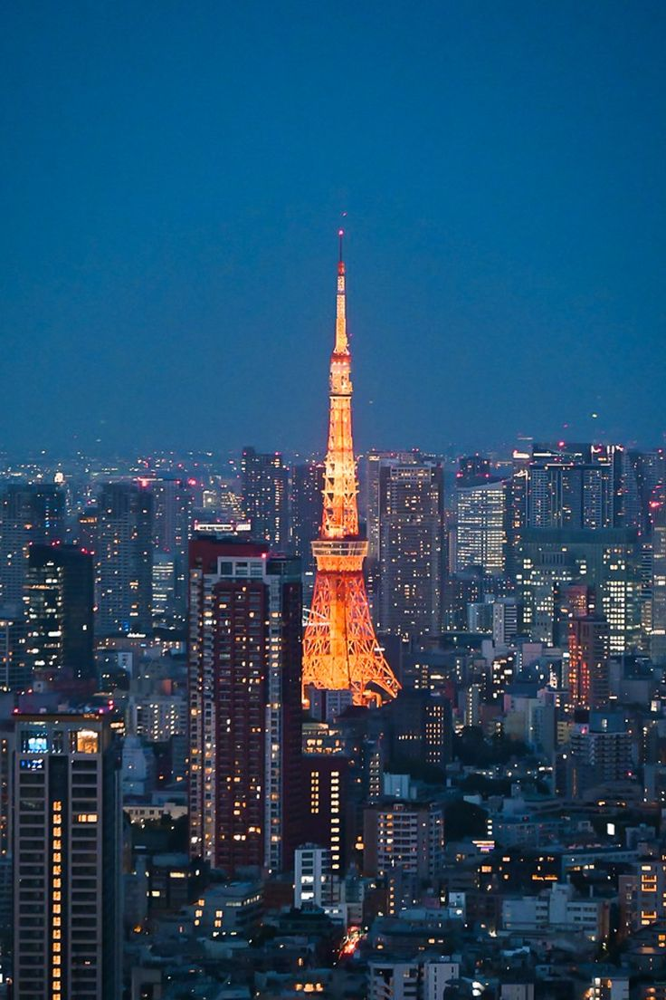
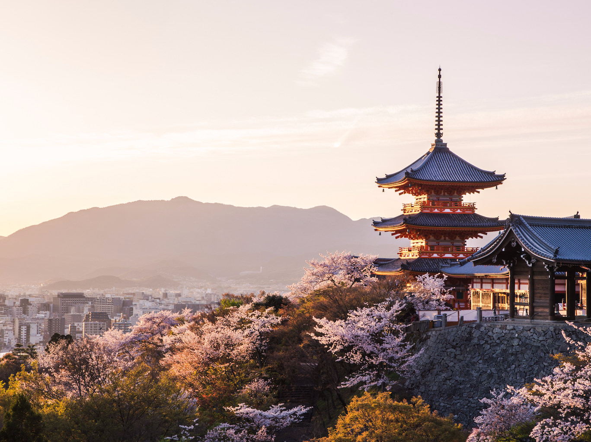
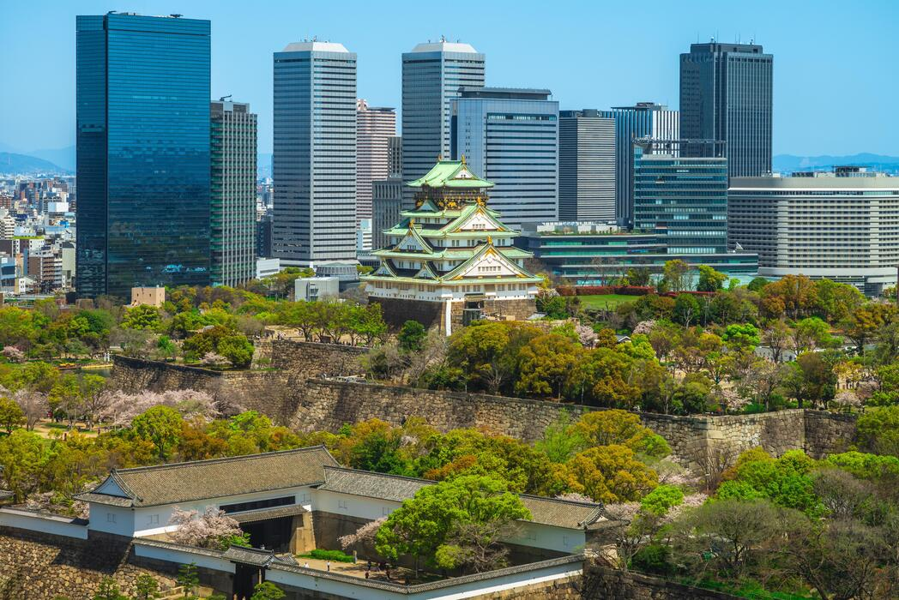
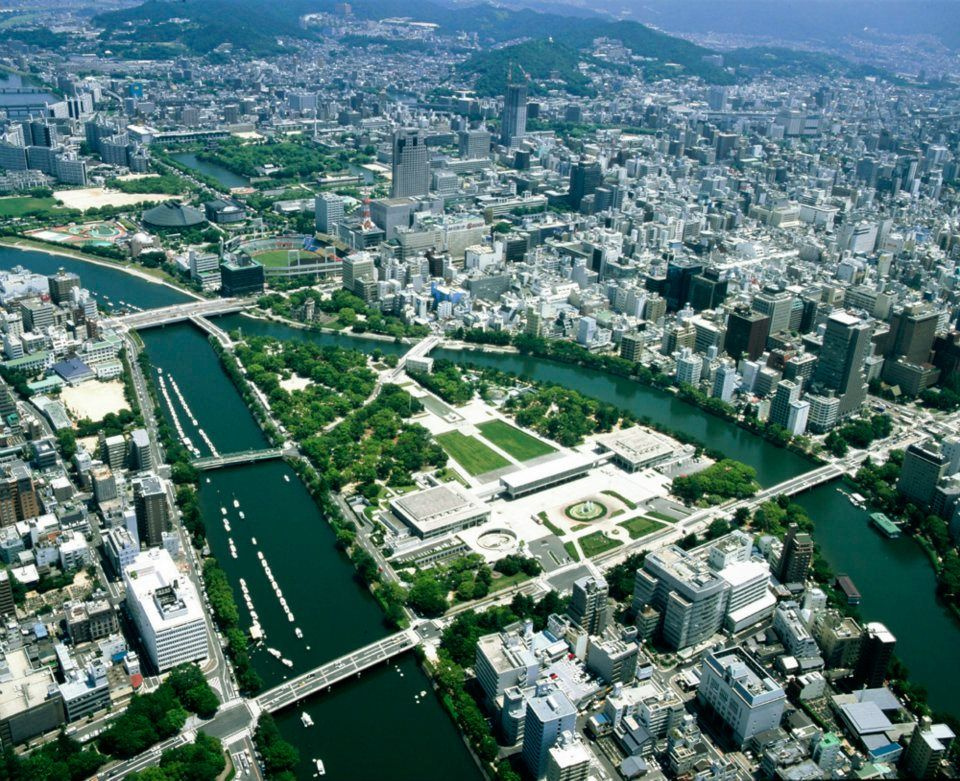
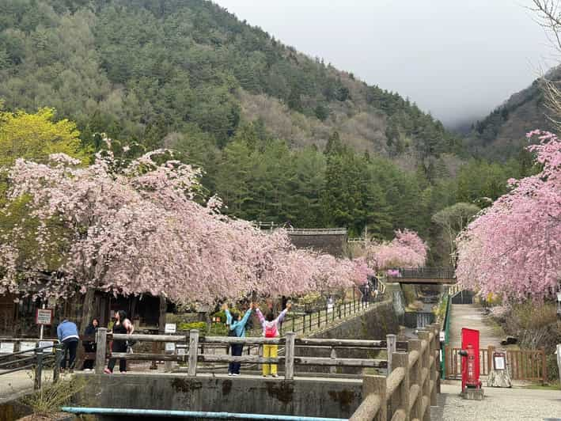

Welcome to SunTravel
Your journey starts here!
We are here to help you enjoy a perfect holiday.

Popular tour:
🌸 Journey to Japan
Discover a country that blends ancient traditions with modern technology!
🏙️ Popular Cities
Tokyo

Tokyo is a futuristic metropolis with skyscrapers, cutting-edge technology, and pop culture. Visit Shibuya with its famous crosswalk, Senso-ji Temple — the oldest temple in Tokyo, the Imperial Palace, as well as modern museums and shopping centers.
Kyoto

Kyoto is an ancient capital of Japan with over 1,600 temples. Don’t miss Fushimi Inari with its thousands of red torii gates, the Golden Pavilion Kinkaku-ji, and the old streets of Gion, where you can see real geishas. Traditional Japanese gardens and tea ceremonies are also highlights.
Osaka

Osaka is famous for gastronomy and entertainment. Osaka Castle is a historical landmark, Dotonbori is the center of nightlife and street food, and Kaiyukan Aquarium is one of the largest in the world. Don’t forget to try local dishes like okonomiyaki and takoyaki.
Hiroshima

Hiroshima is a city of history and remembrance. The Peace Memorial Park and Atomic Bomb Museum commemorate the tragic events of 1945. Miyajima Island is famous for Itsukushima Shrine, which appears to float during high tide. This place combines history and scenic beauty.
Nikko and Hakone

Nikko and Hakone are perfect destinations for nature lovers. Mountain landscapes, lakes, hot springs (onsen), and national parks. Nikko is known for its carved wooden temples and pavilions, while Hakone offers beautiful hiking routes and relaxing nature retreats.
🏯 Attractions and Activities
- Temples and shrines: Kinkaku-ji, Fushimi Inari, Senso-ji
- Modern attractions: Disneyland, Universal Studios, museums, aquariums
- Nature: Mount Fuji, cherry blossoms, hot springs
- Culture and traditions: tea ceremonies, kimono, festivals (Tanabata, Hanami)
📜 Brief History
Japan has a history of over 2,000 years. The country is famous for combining ancient traditions with modern technology. Historical cities like Kyoto, Nara, and Hiroshima preserve Buddhist and Shinto monuments. Japanese castles, gardens, and temples are popular tourist destinations.
💡 Travel Tips
- Best seasons to visit: spring (cherry blossoms) and autumn (red leaves)
- Before traveling: passport, insurance, JR Pass
- Try local cuisine: sushi, ramen, udon, tempura
🌟 Expertise and Experience
SunTravel has many years of experience in organizing unforgettable trips. Our team knows the best destinations, hidden gems, and can create personalized itineraries for every type of traveler. From cultural tours in ancient cities to adventure trips in nature, we ensure that every detail is carefully planned for a smooth and enjoyable journey.
We constantly update our knowledge about each destination, including local events, festivals, and seasonal attractions. This allows us to provide unique travel experiences that are not found in standard tour packages.
💼 Professional Service
We provide full support from your first consultation until the end of your trip. Our travel agents are friendly, responsive, and ready to solve any issue quickly. Whether you need help with flight tickets, accommodation, or special requests, we are there for you every step of the way.
Our team also assists with travel documents, insurance, and advice on local customs and safety tips, ensuring that your journey is stress-free and enjoyable.
🌍 Wide Range of Tours
SunTravel offers a wide variety of tours to meet every interest. From historical and cultural experiences in cities like Kyoto and Tokyo, to relaxing nature trips in scenic areas like Hakone and Nikko, and exciting adventure tours for thrill-seekers.
We also offer tailor-made packages for families, couples, solo travelers, and groups, making sure that every journey fits your preferences, pace, and budget.
💰 Affordable Prices
We provide competitive pricing without compromising quality. Special offers, seasonal discounts, and flexible packages help you get the best value for your money. By carefully selecting hotels, transportation, and local guides, we make premium travel experiences accessible to more travelers.
We also offer transparent pricing with no hidden fees, so you can plan your budget confidently and enjoy every moment of your trip.
⭐ Customer Satisfaction
Thousands of happy travelers trust SunTravel. Our reviews, testimonials, and repeat customers show our commitment to making each journey unforgettable, enjoyable, and worry-free.
We focus on personalized attention, listening carefully to your needs, and providing tips and guidance to ensure your holiday is memorable and comfortable.
🌟 Anna K., USA
"I had an amazing experience with SunTravel! The itinerary was perfectly planned, and every day was full of adventures and cultural discoveries. The staff was extremely helpful and friendly. I can’t wait to book my next trip!"
🌟 David L., UK
"Traveling to Japan with SunTravel was a dream come true. From booking to the end of the trip, everything was seamless. The guides were knowledgeable, and the hotels were comfortable and well-located. Highly recommended!"
🌟 Maria S., Canada
"SunTravel exceeded my expectations! The combination of cultural tours, nature trips, and local food experiences made my journey unforgettable. I especially loved the personalized attention and tips provided by the team."
🌟 Alex P., Australia
"Excellent service and amazing travel experience! The team at SunTravel took care of all the details, allowing me to relax and enjoy every moment. The customer support was fast and very helpful. Definitely my go-to travel agency!"
Contact Information:
Phone: + XXXXXXXX
Email: XXXXXXX@gmail.com